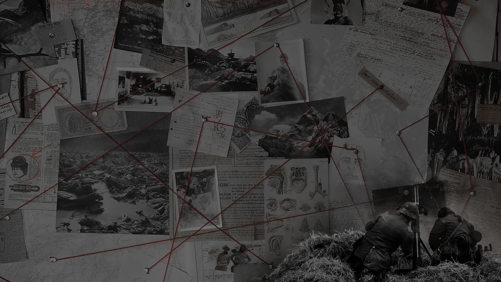
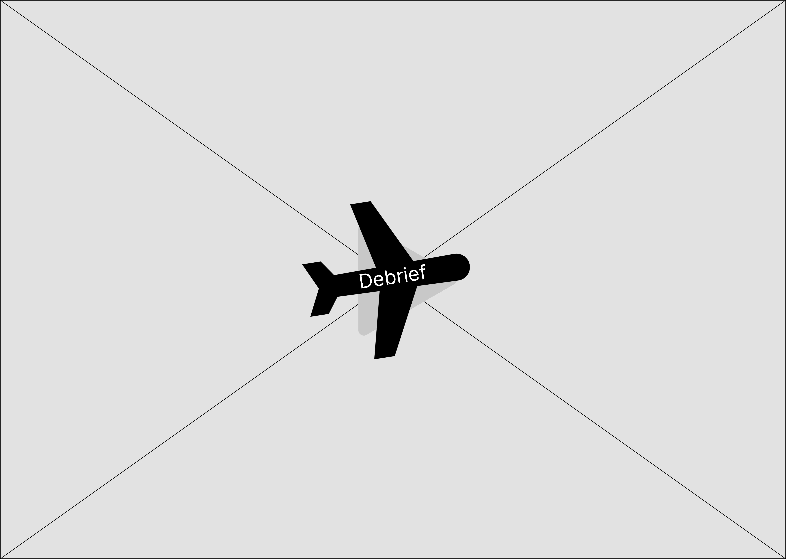

Project Context
This was a client project at Fix It In Post Studios, a part of the services we offered for Film Pre-production. Here, We transformed a film director's static pitch deck into an interactive website with seamless music, cinematic visuals, and spy-inspired branding.
But Why?
Design Touchpoints & Decisions
While the story and visual content were strong, the delivery format needed to be elevated. We reframed the solution entirely: not a deck, but a cinematic web experience.
Transformed slides into an interactive website
The site format solved cross-platform compatibility issues and added immersive storytelling tools like animation and music.
Browser-safe audio playback with trigger
Since autoplay is blocked on most browsers, I tied music playback to a website interaction, solving a technical challenge with thematic relevance.
JavaScript transitions for cinematic flows
Animations and UI reveals followed cinematic pacing instead of web-native behaviors, adding theatrical impact.
Responsive layout and performance optimization
Ensured smooth, fullscreen playback of visuals and audio on mobile, tablet, and desktop.
Design and Development
I designed and developed a password-protected, fully responsive website for the film pitch, focused on cinematic pacing, minimal UI, and uninterrupted music playback.
As the movie is currently in production and is NDA-protected, I have used low-fidelity images and/or stock images for explanation purposes.
Visual & UX Research
Conducted research and created graphic and visual content, high fidelity mockups thematically inspired by movies in the same genre such as Argo, the Mission Impossible series, and Saving Private Ryan.

Secure Landing & Entry Flow
Visitors began with a login screen leading to a blank dark interface, all to keep the mystery intact.
Step 1: Build Secure Entry Point
Developed a password-protected landing page to ensure confidentiality of the pitch.
Minimal UI focused attention on a single interactive element.
Step 2: Create Cinematic Reveal
Clicking a plane-shaped button triggered background music and unveiled the full pitch content.
Transitions were themed to match the film's tone.
Step 3: Optimize for Responsiveness
Ensured seamless playback across all devices and browsers.
Background audio was uninterrupted, and layout adapted to screen size.
Plane-Shaped Button Interaction
Clicking the stylized button triggered background music and revealed the rest of the pitch content with smooth transitions.

Responsive Web Development
The final step was to develop, test for bugs and usability, and ship the website. It was built with custom JavaScript to ensure performance across all web devices.
The Impact
The director presented the website in producer meetings, resulting in follow-ups
The format impressed producers and stood out from traditional slides
Led to continued collaborations on future film-related projects
What I Learned
The most valuable part of this project was understanding how design and storytelling must adapt to technical limitations in the real world; especially around things like autoplay and format stability.
Key Takeaway: UX for Creative Industries
Designing outside of traditional apps or e-commerce expands how UX can solve problems in storytelling, pitching, and entertainment.
Key Takeaway: Design within technical boundaries
Autoplay restrictions and cross-device behavior taught me that innovation isn’t just about vision — it’s about solving within constraints.